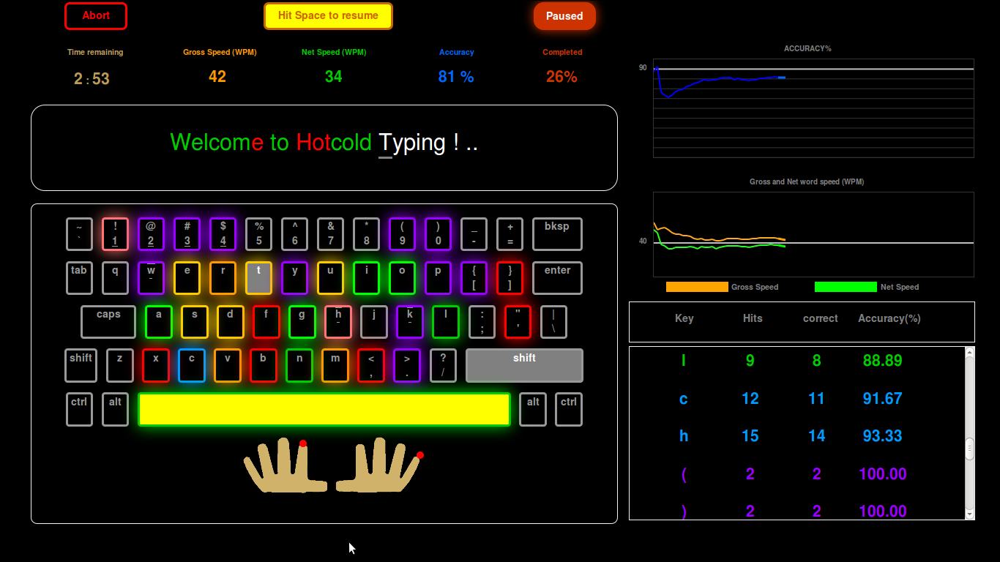

This section gives an overview of different features of Hotcold Typing. Detailed explanation can be found in further sections.
- Key glows : In Hot-cold Typing, as you type in the course window, your onscreen keys glow in different colors depending on the current accuracy of the corresponding key. There are a total of 8 color shades, each representing a different accuracy range from 0 to 100%.
- Differentiating key glows : Key glows correspond to the most recent key press (i.e glowing the most recently pressed character out of the two characters for the same key in the keyboard). From the key glows, you can visually differentiate capital letters from small letters, numbers from special characters, top row special characters from bottom row special characters in the onscreen keys, thus enabling you to visually identify the accuracy of the right key during the progress of the course.
- finger highlight : an image mimicking human hand with fingers is present to indicate the course taker on appropriate fingers for the keys.
- Key highlight : The key to be typed is highlighted in the virtual keyboard. Also, keys in the lesson window (window holding the course text) which are typed right are highlighted in green, and keys typed wrong are highlighted in red.
- Live graphs : Live graphs on accuracy, gross and net typing speed are drawn during the progress of the course.
- Live statistics : The key statistics are prepared and presented at the end of every keypress.
- Automatic pausing : The application pauses automatically after 8 seconds of typing inactivity. For example, if a person does not type anything for 8 seconds, the application pauses automatically. It is important to note that, mouse movements are not considered for this functionality.
- Manual pausing : The application can also be paused and resumed at will depending on the convenience of the course taker.
- Dynamic course creation : You can easily create a course of their choice on the fly. All you have to do is to enter some course text and choose a time from the options. Once done, you can enjoy learning with all these features for your own course.
This section describes key glows in detail, and provides information on how to understand and interpret them. It is necessary to have a good understanding of this section before attempting the courses.
When you type on the course window, your onscreen keys glow in different colors. Each color denotes a specific accuracy range from 0 to 100, for that particular key so far. The following table gives the necessary information on how to interpret the key glows.
| key example |
accuracy range |
what it actually means |
| e |
>95% |
Excellent accuracy. keep it up ! |
| x |
91% - 95% |
Very Good. Improve slightly; you can be excellent. |
| a |
86% - 90% |
Good. Little effort will give you a very good accuracy. |
| m |
81% - 85% |
Ok. Be careful not to drop your accuracy further. |
| p |
76% - 80% |
Average. Pay more attention to accuracy. |
| l |
71% - 75% |
Below average. Don't drop your accuracy further. |
| e |
61% - 70% |
Bad. Pause and pay more attention for this key. |
| s |
<60% |
Worst. your accuracy is seriously bad !! |
Remember easy: Any shade of blue, you are doing very good.
Remember easy: Any shade of green, you are doing good.
Remember easy: Any shade of orange, you are doing ok.
Remember easy: Any shade of red, you are doing bad.
Differentiating capital from small letters:
It is important to remember that key glows correspond to the most recent key press (i.e glowing the most recently pressed character out of the two characters for the same key in the keyboard). You can differentiate capital letters from small letters from the key glows, and identify to which particular character the key glow corresponds to. Capital letters are denoted by a
small dash above and below the character.
For example: after typing "EXAMPLE", the keys look like e
x
a
m
p
l
e
Notice the small dash above and below the letters. This means the most recently pressed key is a capital letter.
Differentiating special characters and numbers:
Following special characters are differentiated by a
top and bottom dash : _, +, {, }, :, ", |, <, >, ?.
Note that all these characters occupy top position in the keyboard.
The corresponding bottom position symbols (-, =, [, ], ;, ', \, comma, period, /) are indicated without any dashes. The keys appear in the normal way.
For example: after typing " { ] ", the keys look like
{
[}
]
Notice the small dash above and below the letters indicate top row symbol. No dashes indicate bottom row symbol.
Numbers are denoted by an
underscore. For example typing "1234%^&" look like
!
1@
2#
3$
4%
5^
6&
7
Notice that numbers have an underscore. No underscore in number keys denote corresponding top position symbols.
Remember easy : When the keys have symbols in both top and bottom row, top row symbols are indicated by dash above and below them. No dashes indicate bottom row symbols.
Remember easy : When the keys have symbols in top row and numbers in bottom row, numbers are indicated by an underscore. No formatting indicates top row symbols.
There are 2 live graph windows. One for accuracy, and another for speed. Speed graph has two indications : Net speed and Gross speed.
Live Accuracy graph:
This graph shows your overall accuracy during the course. The graph starts at the start of the course, and ends when the course time is completly over. When the course is completed ahead of time, saved time is highlighted in the graph.
A thick reference line is presented at the graph to indicate 90% accuracy. This line can be used to visually identify whether your accuracy is greater than 90%. Also thin pale lines are present for each every 10% accuracy increase starting from 10%. The bottom of the graph indicates 0% accuracy, and top of the graph indicates 100% accuracy.
Let us be clear about some technical terms.
Gross speed (WPM) - Gross speed indicates the number of words (right or wrong) you can type in a minute. The unit WPM indicates words per minute.
Net Speed (WPM) - Gross speed indicates the number of right words you can type in a minute. The unit WPM indicates words per minute.
Difference between gross and net speed : In touch typing, typically 5 characters constitute a word, and this 5 character word is used to calculate your speed. For example: Let a person type a 100 word course in a pace of say, 30 words per minute; But he types it completely wrong. Then his Net speed is 0 (zero). What this means is, effectively it is equivalent to that person not having typed anything. Net speed is the ultimate indicator one should focus while learning touch typing. In Hot-cold Typing, Net speed is indicated in green and gross speed in orange.
Note : It is important to note that wrongly typed characters cannot be undone in Hotcold Typing !
Note : Before starting the course, the accuracy is displayed as 100%. This means if the course taker typed nothing his accuracy is shown as 100% (but the speed will be 0).
Live Speed graph:
This graph shows your gross and net speed during the course. The graph starts at the start of the course, and ends when the course time is completly over. When the course is completed ahead of time, saved time is highlighted in the graph. Net speed is drawn in green, and gross speed is drawn in orange. If the net speed is equal to gross speed (ie when your accuracy is closer to 100%), only net speed(green line) is visible in the graph.
A thick reference line is presented at the graph to indicate the speed of 40 WPM (40 words per minute, average speed for touch typing). This line can be used to visually identify whether your accuracy is greater than 40WPM. The bottom of the graph indicates a speed of 0 WPM, and top of the graph indicates a speed of 100 WPM (speed above that is normally very rare, and if achieved will not be showed).
Note : Before starting the course, the speeds are displayed and drawn as 0.
Live key statistics are prepared and updated in the bottom right window of the interface.
The key statistics are prepared and presented at the end of every keypress. Following information are presented in the key statistics:
key - name of the key (eg: A, [, 3, % etc).
Hits - total number of times the character has appeared in the course so far.
Correct - total number of correct attempts so far for the particular character.
Accuracy % - A value between 0 and 100 indicating your accuracy for the particular key.
Each key statistic line is displayed in a color that is similar to the color scheme described in 'Understanding key glows' section.
For example, if the accuracy of key "E" is 93%, it will look like
key Hits correct Accuracy %
E 44 41 93.18
This indicates that the key "E" has appeared 44 times (so far), and it has been typed right 41 times. The statistics will be updated after every keypress. The color of the line depends on the accuracy of the key, and if follows the color scheme described in 'Understanding key glows' section.
Info : The key statistics are ordered from worst accuracy to best accuracy. By default top 4 worst keys are visible, so that it can be noted and rectified. Other key details can be viewed by scrolling down the statistics window.
The interface can be divided into: Primary left window and Secondary right sidebar.
Following is a screenshot of the entire course window.

Primary Left window :
Control Panel:
This is the top most row of this window. The buttons present in the window are
- abort button - visible during the progress of the course. Hidden when course is over. Returns back to the courses page immediatly. The course taker cannot view the course statistics if the course is aborted.
- Space bar indication - When a course is initiated, it is in a standby mode. This is to ensure that the course taker is in right position to take the course. When the course taker is ready, they have to hit the space bar to start (or resume from a pause) the course. This indication appears in this panel. Along with the indication, the space bar is highlighted for better visible indication.
- pause button - visible during the progress of the course. Hidden when paused, or when the course is over. The course taker can view the course statistics at leisure, and then resume when neccessary.
- Paused button - Indicator for a paused session. Visible when paused. Hidden when the course in progress, or when over.
- Redo button - visible after the course is over. Pressing this will start a new session of the same course.
- Course over indication - Indicator for a completed course. There are two scenarios in which a course may be over.
- When the course taker has ran out of time.
- when the course taker has completed the whole course ahead of time.
- Courses home - Returns back to the courses page.
Info bar :
The indicators present in the info bar are
- Time remaining - indication of time remaining for the course. Indicates 0:00 when ran out of time.
- Gross speed (WPM) - Gross speed indicates the number of right words you can type in a minute. The unit WPM indicates words per minute.
- Net Speed (WPM) - Gross speed indicates the number of right words you can type in a minute. The unit WPM indicates words per minute.
- Accuracy % - This indicates your overall accuracy percentage; i.e: ratio of total number of correct key presses to the total number of key presses.
- Completed % - This indicates the current progress of the course. Indicates 100% when the course is completly over.
Lesson window :
This is the screen where the course text appears. The characters are turned green when rightly pressed, and red when wrong.
Onscreen keyboard :
Your virtual on screen key board, keys of which glow to give you a visible indication of individual key accuracy.
Finger Image :
An image of human hand with fingers in typing posture. A big red dot is indicated on the appropriate finger to show the course taker the right finger to type the keys.
Secondary Right Sidebar :
Live accuracy graph :
A graph which draws your accuracy as your course progresses.
Live speed graph :
A graph which draws your gross and net as your course progresses.
Live statistics window :
Live key statistics are updated in this window after every keypress. This window is scrollable.
Info : When the screen size becomes so small, the secondary right sidebar is hidden, and the primary left window occupies the whole screen.
Pressing the browser shortcuts tend to open a new window or tab, or takes the focus to some undesirable textbox. This disrupts the touch typing practice as starters tend to confuse 'shift' key with 'ctrl' key, resulting in some undesirable behaviours like moving out of the current course window. For this reason, some common browser shortcuts have been disabled when a course is in progress. Following table gives the information on disabled shortcuts.
Info : All the shortcuts tested in latest firefox and chrome only.
Info : The application works well in Firefox with disabled shortcuts.
Info : Chrome (or other browser users) should be careful to not press some shortcuts which might lead to undesirable effects.
| Shortcut |
comments |
| Ctrl + f |
disabled in firefox and chrome. |
| Ctrl + d |
disabled in firefox and chrome. |
| Ctrl + j |
disabled in firefox and chrome. |
| Ctrl + h |
disabled in firefox and chrome. |
| Ctrl + e |
disabled in firefox and chrome. |
| Ctrl + k |
disabled in firefox and chrome. |
| Ctrl + g |
disabled in firefox and chrome. |
| Ctrl + s |
disabled in firefox and chrome. |
| Ctrl + p |
disabled in firefox and chrome. |
| Ctrl + o |
disabled in firefox and chrome. |
| Ctrl + u |
disabled in firefox and chrome. |
| Ctrl + l |
disabled in firefox and chrome. |
| Ctrl + w |
disabled in firefox. chrome closes the window on pressing ctrl w. |
| Ctrl + n |
disabled in firefox. chrome opens a window on pressing ctrl n. |
| Ctrl + t |
disabled in firefox. Chrome opens a new tab when pressed. |
Info : In addition to this firefox's quick find shortcut is also disabled.
Info : User's who have manually enabled browser shortcuts should be careful to not to press their custom shortcuts.